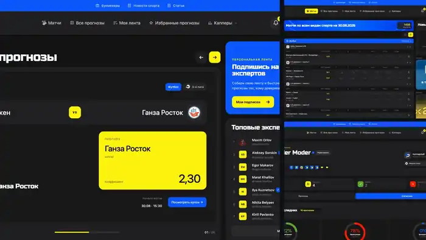
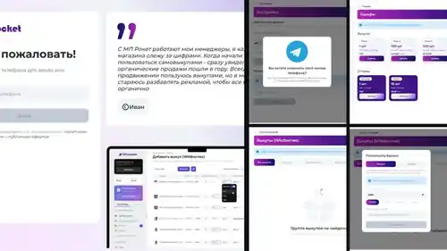
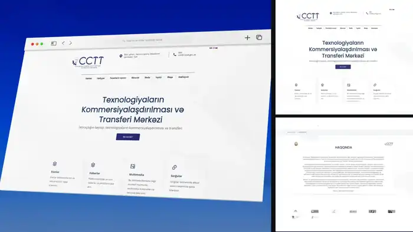

В разработке

КапперХаб
Sports platformПлатформа прогнозов: матчи, эксперты, подписки, персональная лента, статистика и пользовательский кабинет.
GitHub проекта ↗3 скриншота
Backend, API, автоматизация, спортивные платформы, личные кабинеты и сервисы с реальной бизнес‑логикой. Ниже — часть моих коммерческих и собственных проектов.
Живые проекты показываются актуальным превью сайта. Для закрытых и архивных работ используются сохранённые скриншоты.

Платформа прогнозов: матчи, эксперты, подписки, персональная лента, статистика и пользовательский кабинет.

Спортивный сервис с аналитикой, матчами, прогнозами и интеграциями с AI‑логикой.

Спортивная data‑платформа и API: матчи, турниры, статистика, коэффициенты и данные по нескольким видам спорта.

Личный кабинет сервиса для продвижения товаров: баланс, тарифы, выкупы, отзывы, настройки и платежные сценарии.

Корпоративный сайт Центра коммерциализации и трансфера технологий с информационными разделами и многоязычным интерфейсом.

Спортивный веб‑проект с матчами, прогнозами, статистикой и контентной частью.

Контентный спортивный портал с прогнозами, матчами и SEO‑ориентированной структурой страниц.

Англоязычный информационный портал с обзорами, контентной архитектурой и SEO‑страницами.

Корпоративный сайт компании с адаптивным интерфейсом, услугами и контентными разделами.

Автомобильный корпоративный сайт с каталогом и презентацией компании.

Спортивный портал с прогнозами, публикациями и структурой под органический трафик.
Веб‑проект из коммерческого портфолио. Для карточки сохранено место под архивные скриншоты.
Образовательный веб‑проект. Архивные изображения можно добавить в эту карточку следующей загрузкой.
Коммерческий веб‑проект. Для недоступного сайта используется отдельная архивная карточка.
Стек подбираю под задачу: от классических Django‑сервисов до API, фоновых воркеров и контейнерного деплоя.